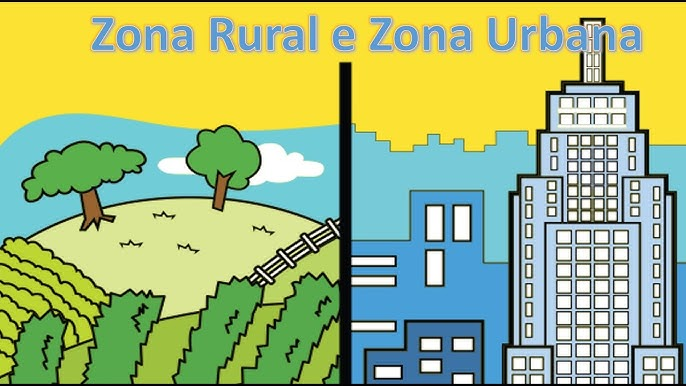
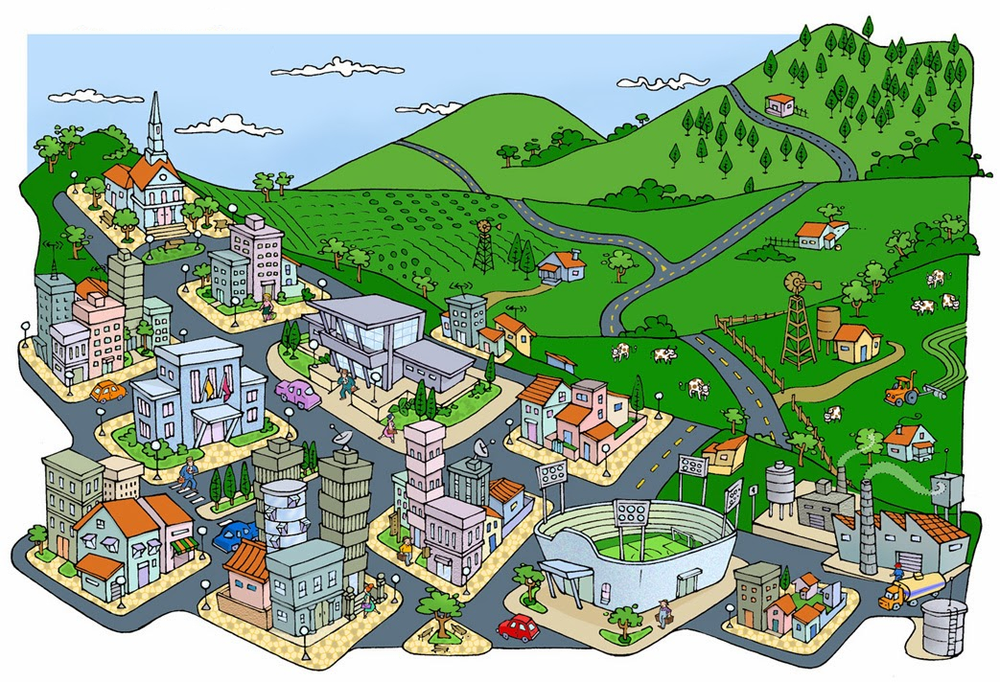

O que é o Programa Agrinho?
O Programa Agrinho é um conjunto de ações de Educação e de Promoção Social, destinado a todos aqueles que atuam na educação e comunidade em geral. Criado em 1995 no Estado do Paraná, o Programa Agrinho surgiu da necessidade de orientar trabalhadores rurais quanto ao uso adequado de defensivos agrícolas.
Campo e Cidade: Um Diálogo Sustentável


Quem Somos
Somos estudantes comprometidos com a construção de um futuro sustentável para o Paraná, promovendo a integração harmoniosa entre o campo e a cidade por meio da educação, do respeito mútuo e da consciência ambiental.
Equipe 3ºA
- Amanda Fantini
- Amanda Mendonça
- Luhara Cristina
Contato
Email: contato@agrinho2025.com
Instagram: @agrinho2025